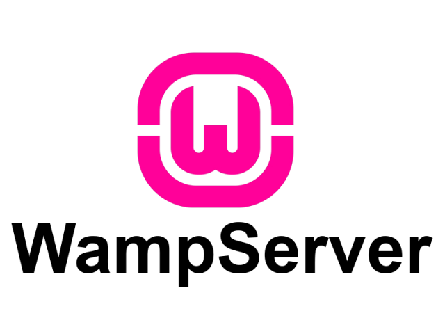

Langages Pratiqués
Outils/Logiciels utilisés


- 
Bienvenue sur mon portfolio
je suis étudiant depuis deux ans au lycée parc des loges a Evry-courcouronnes (91) en deuxième année en BTS SIO (Services Informatiques aux Organisations), spécialité SISR (Solutions d'Infrastructure, Systèmes et Réseaux).
Consultez mon cv
Je vous présente la formation que j'ai suivie et dans laquelle j'ai évolué pendant 2 ans.
Le Brevet de Technicien Supérieur aux Services Informatiques aux Organisations (BTS SIO), s'adresse à ceux qui souhaitent se former en deux ans aux métiers d'administrateur réseau ou de développeur. Et ainsi par la suite intégré directement le marché du travail ou continuer des études, dans le domaine de l'informatique. Le BTS SIO propose deux spécialité.
L'acronyme SISR signifie « Solutions d’infrastructure, systèmes et réseaux ». L’option SISR est destinée aux étudiants qui s’orientent vers les métiers liés à la conception et la maintenance d’infrastructures réseaux. Assurer la sécurité, la maintenance et l’installation des réseaux et des équipements informatiques font partie des principales missions des futurs administrateurs, techniciens ou pilotes d’exploitation. Des cours plus généraux viendront compléter la formation et apporter des compétences plus généralistes, permettant ainsi aux diplômés d’être opérationnels dans n’importe quelle entreprise.
Au cours de mon cursus, j'ai pu obtenir plusieurs certifications et diplômes que vous trouverez ci-dessous.
Les connaissances que j'ai acquises au sein de ces formations m'ont permises de développer mes compétences en informatiques.


vous retrouverez tous mes projets réalisés au cours de mon parcours de formation
Les 2 stages réalisés au cours de ma formation.
Stage BTS SIO de 1ère année. Stage suivi dans l'entreprise Veepee au sein du service de dev front-ent.
Veepee (Verone campus), 162 Rue Ambroise Croizat, 93200 Saint-Denis
La veille technologique ou veille scientifique et technique est un processus cyclique de gestion de l'information,
tendant à l'automatisation,
qui a pour objectif de connaître les nouveautés et les tendances dans les domaines
scientifiques et techniques.
N’hésitez pas à me contacter pour toutes questions ou renseignements complémentaires via ce formulaire.